Experiments
Laboratory Experiments
With our topology ready and the devices configured, we will now begin our experiments to better understand how TLS works, from TCP session establishment and the TLS 1.2 and 1.3 handshake comparison to the components of its protected packets and attacks against session establishment and the reordering, retransmission, and loss of packets during operation.
TCP Session Establishment
To begin our experiments, we will briefly analyze the establishment of the TCP session prior to the TLS handshake, since we will attack this process later.
This handshake is composed of three messages. The TCP SYN message is sent by the client and begins the handshake process.
The response to this message comes from the server in the form of a TCP SYN-ACK message, acknowledging the reception of the SYN and beginning the connection.
Finally, the client acknowledges the reception of the SYN-ACK with its own ACK message. From this point forward, TLS will begin its handshake through the newly established TCP connection.
We can easily see this in practice by starting a Wireshark capture on the connection between the client and server. Then, we restart the TLS server and begin a connection from the client.
The capture should look like Figure 1:
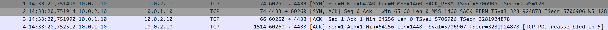
We can see that the client initiated the connection with a TCP packet with the SYN flag set. This was answered by the server with a TCP packet with the SYN and ACK flags set. To conclude the handshake, the client responds with a TCP packet with only the ACK flag set, following the expected process for establishing the connection.
These messages are necessary for the creation of a TCP connection, and interference with this process can result in a failed connection, as we will see in our attacks.
TLS 1.2 Handshake vs TLS 1.3 Handshake
For this experiment, our focus will be on the second handshake that we captured: the TLS handshake.
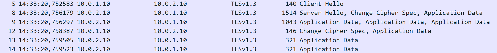
With the commands we used to create the server and client, we used TLS 1.3, since it is the default version. We can compare the handshake in Wireshark with the one we saw in the Overview section, and we can see that it matches what we expected.
It begins with a ClientHello, seen in Figure 3, which contains what we saw before, such as the available cipher suites, the key exchange methods available through extensions, the session ID, and a random value associated with the client.
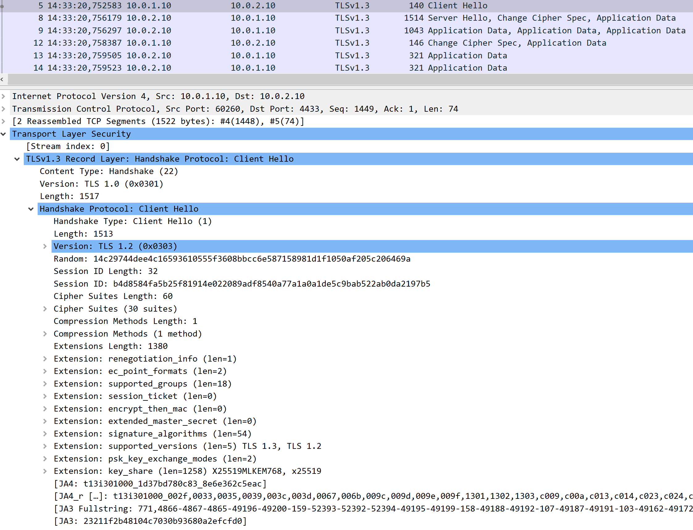
Then, in Figure 4, we can see the server response. This response contains the cipher suite chosen by the server, which is AES_256_GCM_SHA384, and the key exchange method chosen, x25519mlkem768, which is a hybrid method combining the X25519 elliptic-curve method with ML-KEM-768, a post-quantum key-establishment mechanism. It also includes the session ID and the server random value. The server certificate is already encrypted, as expected from the theory.
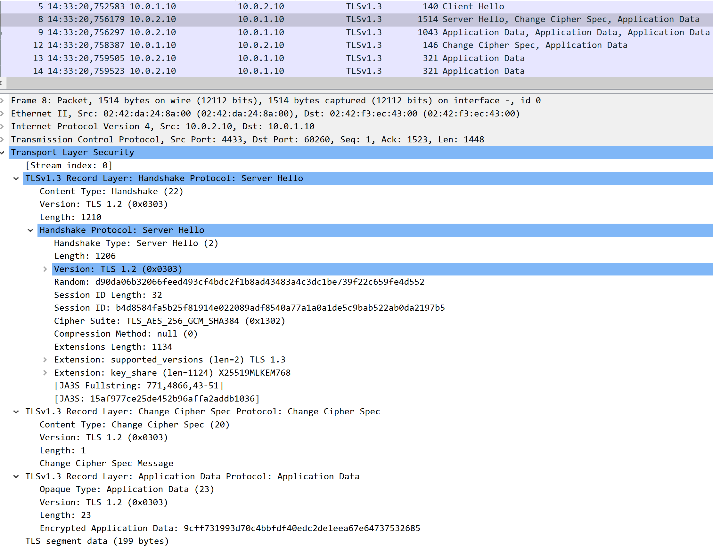
As we can see, TLS 1.3 uses a compact handshake to begin a secure session, including a key exchange prepared for the post-quantum era of computing. From this point onward, TLS handshake and application data are protected according to the negotiated traffic keys.
However, this is the most advanced version of TLS. TLS 1.2 is still widely present despite no longer being the current standard, due in part to its larger handshake and support for older cryptographic algorithms and key exchange methods. We will now study it to see whether it also matches the theory and to understand why TLS 1.3 became the standard.
To do this, shut down the client and server and use the following command to start a new server:
This command configures the server to use TLS 1.2. Now, on the client, use the following command:
With these commands, we now have a TLS 1.2 client connected to a TLS 1.2 server, and we should be able to see the handshake that occurred in Wireshark.
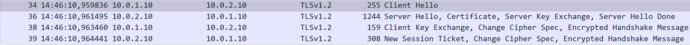
We can see that the handshake's structure is different, starting in the same way with a ClientHello containing the session ID, the random value, and the available cipher suites. We can also see that the key exchange information is not carried in the same way as in TLS 1.3.
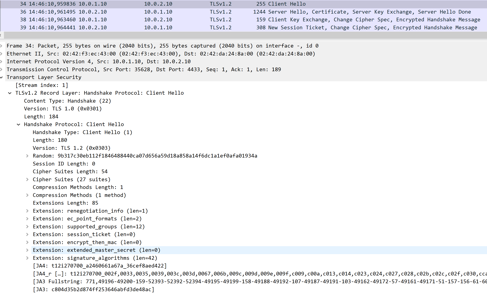
Following this message comes the ServerHello, containing the session ID, the server random value, and the chosen cipher suite. The server then sends additional handshake messages, including its certificate and, depending on the selected cipher suite, key-exchange parameters in the ServerKeyExchange message. This differs from the TLS 1.3 handshake, in which key-exchange material is provided earlier in the handshake.
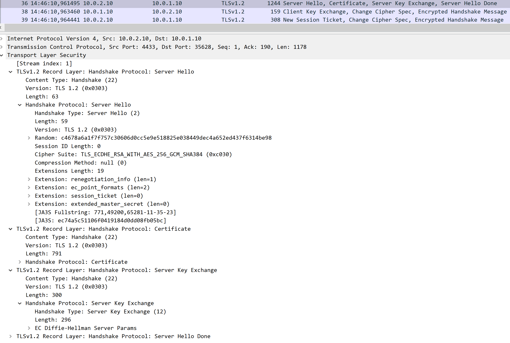
Afterward, the client responds with the appropriate key-exchange message, such as ClientKeyExchange, and then sends a ChangeCipherSpec message, which indicates that subsequent records from the client will use the negotiated cipher state.
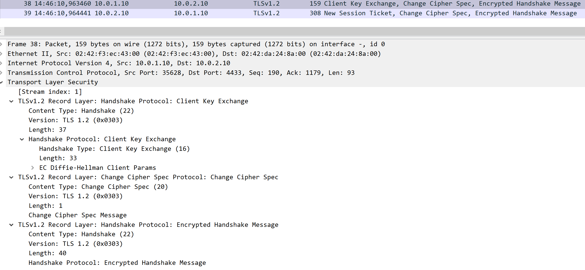
This process ends with the server sending its own ChangeCipherSpec message and completing the handshake. From this point onward, application data is protected by the negotiated TLS connection.
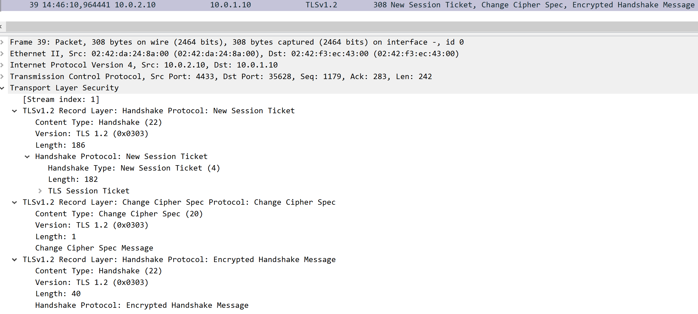
As we can see, TLS 1.3 was a clear evolution of its predecessor, simplifying the handshake and introducing stronger cryptographic requirements, modern key exchange mechanisms, and earlier protection of handshake messages.
Attack on Session Establishment
With the experiments related to the establishment of the TCP and TLS handshakes complete, we will now begin attacking the foundations on which TLS relies and see what it is and is not prepared to protect.
We will begin by targeting the establishment of the TCP connection required by TLS to communicate between the client and server.
To do this, we will prepare a special firewall rule on the attacker that will prevent TCP SYN-ACK packets from passing through it by replacing them with RST messages, forcing the connection to drop.
To configure it, use the following command in MitM:
This rule causes TCP SYN-ACK packets matching the rule to be rejected with TCP RST packets, preventing the TCP connection from being established normally.
When looking at Wireshark, this should be the result:
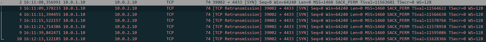
The client will send the first SYN as usual and then continue attempting to establish the connection, resulting in unsuccessful connection attempts before eventually stopping and displaying an error message. Although TLS is a very secure protocol, it cannot protect a connection that cannot be established at the underlying transport layer.
To clear the rule, use the command:
Attack through forced reordering, duplication and loss of packets
For our final experiment and attack, we will now test how TLS behaves when packets are lost, reordered, or duplicated. Although this attacks TLS indirectly due to the separation between the transport and application layers, or between TCP and TLS, it is still interesting to see what happens when TLS comes under attack through this vector.
We will begin with a packet-loss attack, observing how the connection behaves when packets are dropped.
To perform this attack, use the following command on MitM:
This will cause 20% of the packets passing through eth1 to be dropped by MitM. Now we will resume the client process and see what appears in Wireshark:
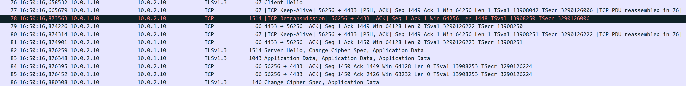
We can see that during the handshake alone, we already had a retransmission due to packet loss. However, TLS still receives an ordered byte stream because TCP provides reliability and reorders the data before delivering it to TLS. We could even make the percentage of packet loss higher and would still see the same general behavior, although sufficiently high loss will eventually prevent the connection from functioning normally.
To clear the attack, use the command:
For our next attack, we will take packets out of order to test the capabilities of TLS and the underlying TCP implementation to reorder its packets into the ordered byte stream that TLS requires.
To perform this attack, use the following command:
With this configuration, we are not only introducing some delay but also reordering some of the packets that arrive at the server. If we restart the client, we can see that barely any effect is noticeable, since TCP sequence numbers allow the receiving TCP stack to reorder the segments before delivering the resulting byte stream to TLS.
With this test complete, let's perform the final attack: duplication of packets.
Clear the command used for the previous attack and use the following command for the new one:
This will give each packet a 25% chance of being duplicated. We expect TLS to follow the same trend as before and continue working normally, thanks to the reliability mechanisms provided by TCP.
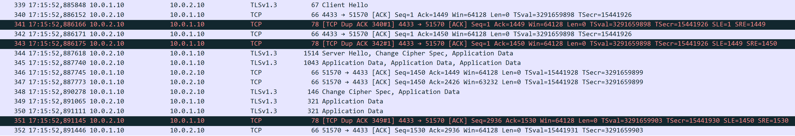
As we can see in Figure 12, there are several duplicated packets in the TLS handshake, but TCP detects and handles the duplicate segments, preventing them from affecting the byte stream delivered to TLS and allowing the handshake to complete normally.
From these experiments, we understood what lies underneath TLS in the form of TCP. We saw the evolution of TLS toward its modern form, including improved cipher suites, a simplified handshake, and, in our environment, a post-quantum hybrid KEM. We also performed several attacks against the transport foundations on which TLS relies to test its resilience.
We hope that these experiments helped you understand TLS slightly better and gave you the tools to perform further experiments and improve your knowledge. We hope to see you in the DTLS laboratory!